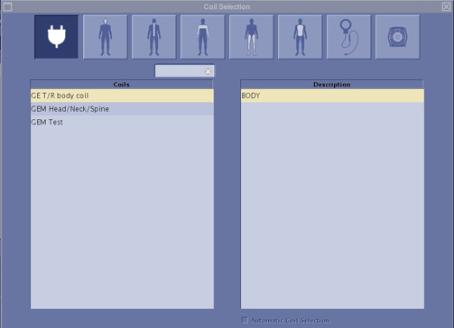
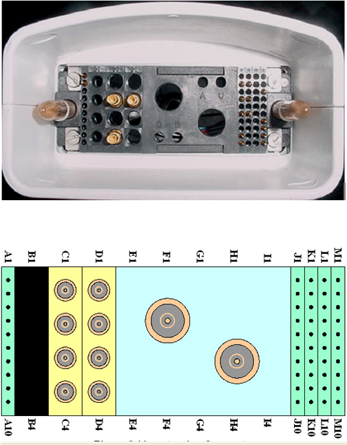
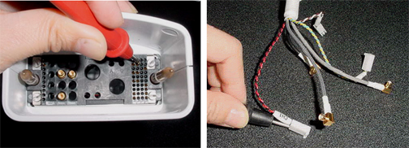
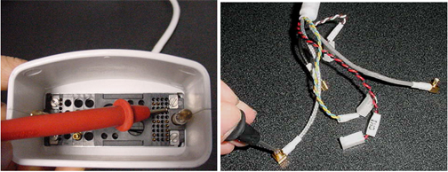

Operating Documentation
Direction 5670006, Rev# 1
Discovery MR750w GEM Service Methods
Module Version 2.0, Version Date 9/20/11
Operating Documentation |
| Required Persons | Procedure |
| 1 | 30 min |
The following tips can be used to troubleshoot common problems with the HDx 3.0T Shoulder Coil by GE.
Digital Volt Meter
Phantom, 2359877
Phantom Positioner, 2375136-3
The following coil configuration name must be installed to run the MCQA tool: HD SHOULDER.
Problem:
You are unable to pre-scan or are scanning and yet receiving no signal.
Possible Solution:
Ensure the green light above the Port A is illuminated. This indicates the coil is properly plugged into the system.
Ensure that the system has correctly detected the coil by checking in the “Currently Connected” in the GUI to select coils in Rx as shown in the example in Illustration 1.
Illustration 1: “Currently Connected” Coils Window in the Scan Screen

Ensure that the landmark is correct and that the cradle has not unlatched.
Perform a continuity check on the output cable (see Section 4.4). The continuity check must be performed by a GE authorized Service Engineer.
Ensure that the coil is positioned with the cable exiting towards the bore.
Ensure that the cable is not looped or crossed.
If you still cannot get a signal, try to scan (transmit and receive) with the body coil. For this test, be sure to remove the imaging coil from the magnet bore before you scan with the body coil. If you still receive no signal the problem probably lies with the MR system. If the scan completes successfully, there is probably a problem with the shoulder coil. Contact GE for further assistance. If you are unable to scan with the substitute coil, there may be a system problem related to this particular coil type.
Problem:
Poor IQ, shaded images, or if MCQA fails
Possible Solution:
Perform a continuity check on the output cable (see Section 4.4). The continuity check must be performed by a GE authorized Service Engineer.
Ensure that there are no loops in the cables.
Ensure that there are no metal or ferromagnetic objects close to the coil, patient or magnet (i.e., safety pin, hair pin).
Ensure that the coil is properly positioned.
Ensure that your center frequency is within the frequency adjustment range for your system.
Ensure that the R1, R2 and TG values from the pre-scan are within normally expected ranges.
If you have not done so already, perform the coil Quality Assurance test (refer to Operator’s Manual 2417405). If the values you obtain do not fall within normal operating parameters, investigate this further by performing a phantom scan with the body coil. For this test, be sure to remove the imaging coil from the magnet bore before you scan with the body coil. If you still have the same problems, there is probably an MR system problem. If the body coil scan is satisfactory, acquire a scan using another coil of the exact same type (receive-only, phased array). If the image quality is visibly improved, there may be a problem with the shoulder coil. Contact GE for further assistance. If the image quality still suffers, there may be a system problem related to imaging with this type of coil.
Problem:
There is a black line or signal void on the image.
Possible Solution:
Ensure that there is no metal present in the area being scanned in or on the patient.
Visually inspect the coil connector. Illustration 2 shows the pin layouts of the coil connector. The connector of the shoulder coil has 2 pins in column A, 5 pins in column J, 3 pins in column K, 5 pins in column M, 3 RF coaxial connectors in C2, C4 and D2, If there are any broken, deformed or recessed pins or coaxial connectors, perform a cable replacement.
| NOTE: | Under no circumstances should the continuity of the center pin of the coax connectors be measured. They may be extremely fragile when improper tools are used. |
Illustration 2: Hypertronics Connector

Check for continuity of DC lines in the external cable
Remove the cable assembly from the coil (see cable replacement procedure)
There are three pins connecting to DC wires in column J: J2, J4, and J6 (see Illustration 2). The table below shows these pins and their corresponding DC wires. Use a digital volt meter (DVM) to check the resistance between the pin in column J and the corresponding DC wire(see Illustration 3). The resistance should be 21.0 ± 2.0 ohms. If any resistance reading is not within this range, perform a cable replacement.

Illustration 3: Measure the Resistance of the DC Line

There are three pins connecting to DC wires in column K: K2, K4, K6 (see Illustration 2). The table below shows these pins and corresponding DC wires. Use a digital volt meter (DVM) to check the resistance between the pin in column K and the corresponding DC wire (see Illustration 4). The resistance should be 1.1 ± 0.3 ohm. If any resistance reading is not within this range, perform a cable replacement.

Illustration 4: Measure the Resistance of the DC Return Line

Check if any pin in J2, J4, or J6 is shorted to the ground. Any pin in K2, K4, and K6 can be used as ground. If any pin is shorted to the ground, perform a cable replacement.
Pin 3 in row M is connected to three RF cables. The system supplies the preamp bias voltage through Pin M3 and RF cables to the coil. Referring to Illustration 2 find Pin 3 in row M. Use a DVM to check resistance between Pin M3 and the center pin of the SMB connector at the end of each RF cable (see Illustration 5). The resistance should be 7.5 ± 1.0 ohm. If any resistance reading is not within this range, perform a cable replacement.
Illustration 5: Measure the Resistance of the Preamp Bias Line
